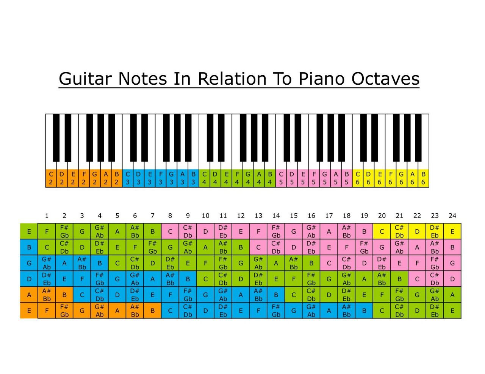
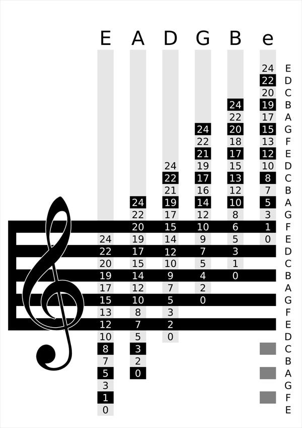

Notation and Notes
Guitar notation is a system used to represent musical notes and rhythms on the guitar. It is used by guitarists to read and interpret sheet music or to write their own music. In guitar notation, notes are represented by letters, with each letter corresponding to a specific pitch. The standard pitch names are:
A, B, C, D, E, F, G
These pitches are also represented by specific frets on the guitar. For example, the pitch "A" can be played on the fifth fret of the low E string or the second fret of the D string.
Rhythms are represented by symbols such as quarter notes, half notes, and whole notes. These symbols indicate the duration of the note and how it should be played. There are also a number of other symbols used in guitar notation to indicate techniques such as bends, slides, and hammer-ons. It is important for guitarists to be familiar with guitar notation in order to be able to read sheet music and understand how to play a piece of music. It is also helpful for writing original music or transcribing songs.
What is a Chord Progression?
A chord progression is a sequence of chords played in a particular order, forming the harmonic foundation of a piece of music. These progressions help define the structure and mood of a song, providing a framework for melody and rhythm. Chord progressions are an essential aspect of music composition and are found in virtually all music genres. In music theory, chords are created by combining multiple notes played simultaneously. When these chords are arranged in a specific order, they create a progression that can evoke various emotions and guide the listener through the musical piece.
For example, a simple progression like C-G-Am-F can produce a happy or uplifting feeling, while a progression like Am-F-Dm-E might convey a more somber or dramatic tone. Chord progressions are often categorized by the number of chords used and their relationship to each other within a particular key. Common types include the I-IV-V progression, often used in blues and rock music, or the ii-V-I progression, a staple in jazz.
Understanding these progressions allows musicians to create more complex and engaging compositions by building on familiar harmonic patterns. Musicians use chord progressions to create tension and release, guiding the listener's emotional response. The choice of chords and their order can significantly impact the song's overall feel, making chord progressions a powerful tool for expression in music.